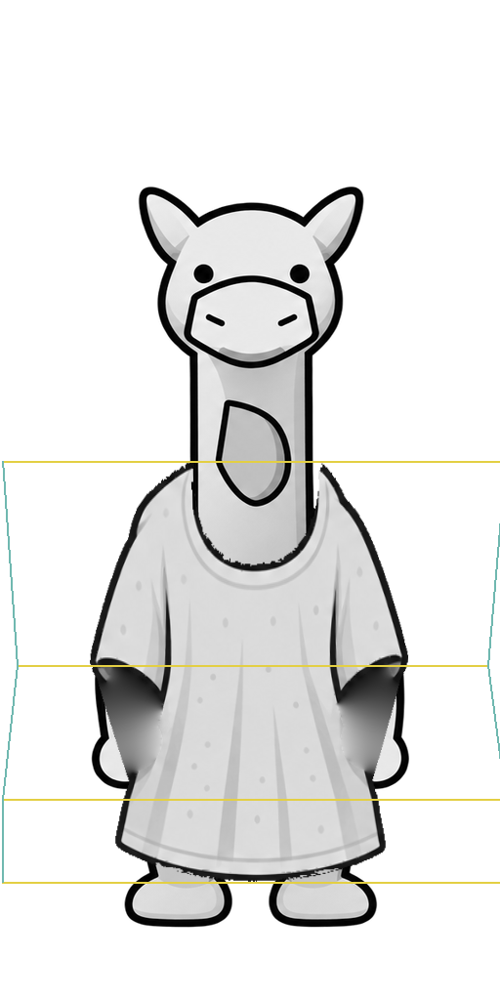
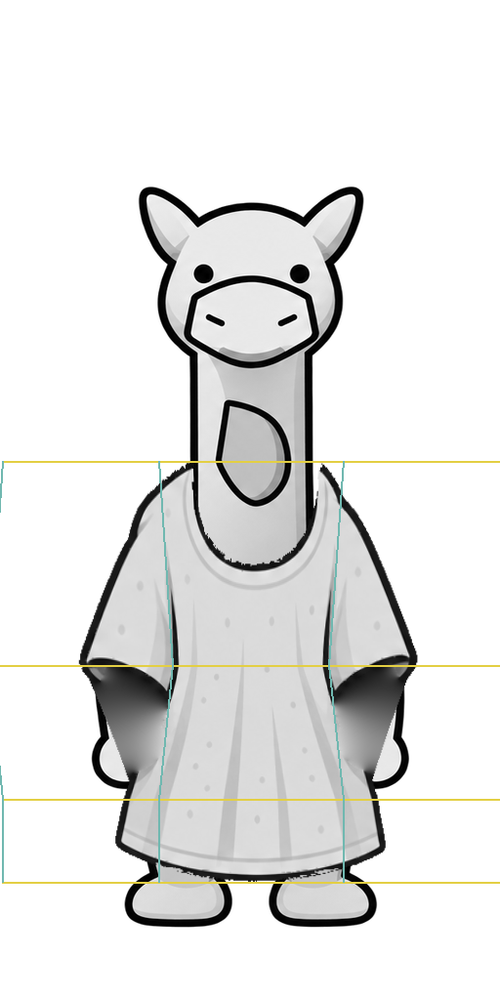
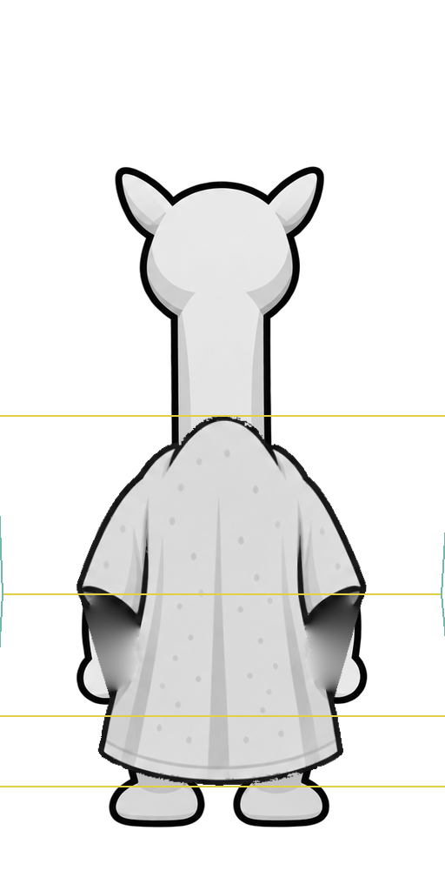
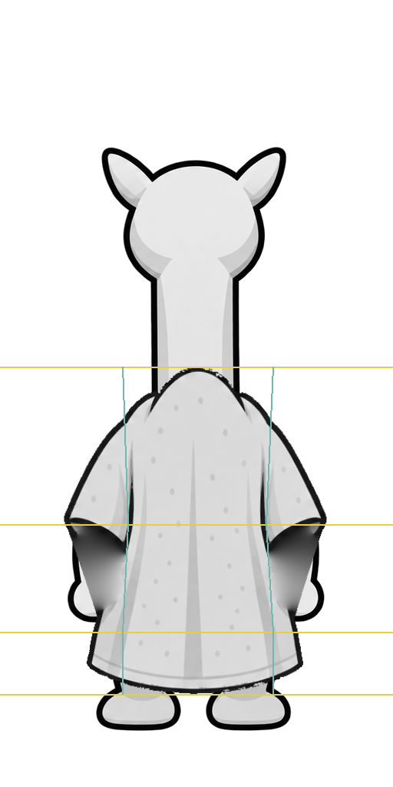

Three bands, then nine cells
Both authoring experiments have been executed on the front and back, using the same raw generated clothing and fixed body visibility masks. The side composition was copied unchanged. No ImageGen call, game launch or native validation was performed.
| Method | What actually changes |
|---|
| Three bands | Landmark-based shoulder/cuff/transition bands, with shared boundaries. Upper width follows arm-center separation; middle joins the fixed lower section. |
| Nine cells | The same three rows plus left sleeve, torso and right sleeve columns. Cuff-row column positions follow the two actual arm rectangles independently. |
| Frozen | Body, mask and lower common-baseline pixels remain fixed. The accepted profile image is byte-for-byte unchanged. |
One continuous coordinate map samples the original complete cloth per method. Before fitting, exterior hand-occlusion notches were bridged between visible cloth edges and missing fabric continued from that same image. Those concealed surfaces are authored reconstruction, not recovered detail. No cutoff-derived alpha is reused.
Front / south
Equivalent existing-pipeline walkthrough

The first column is historical. The remaining three use identical reconstructed cloth and the same fixed body/mask. The lower region matches the common whole-image baseline pixel-for-pixel.
Cloth versus visibility

Remaining cuff conflict

Red marks body pixels absent from both cloth coverage and the inherited foreground selection. Some are actual exposed hand contours that the old mask failed to include. The older required-coverage map therefore cannot be treated as a clean target without reviewing ownership. Both experiments remain unfinished.
Exact source/target controls and full-size outputs
Three-band coordinates · Nine-grid coordinates


Back / north
Equivalent existing-pipeline walkthrough

The first column is historical. The remaining three use identical reconstructed cloth and the same fixed body/mask. The lower region matches the common whole-image baseline pixel-for-pixel.
Cloth versus visibility

Remaining cuff conflict

Red marks body pixels absent from both cloth coverage and the inherited foreground selection. Some are actual exposed hand contours that the old mask failed to include. The older required-coverage map therefore cannot be treated as a clean target without reviewing ownership. Both experiments remain unfinished.
Exact source/target controls and full-size outputs
Three-band coordinates · Nine-grid coordinates


Side view retained
Accepted profile composition, unchanged
Source packet and reconstruction provenance · Three-band measurements · Nine-grid measurements · Review and limitations